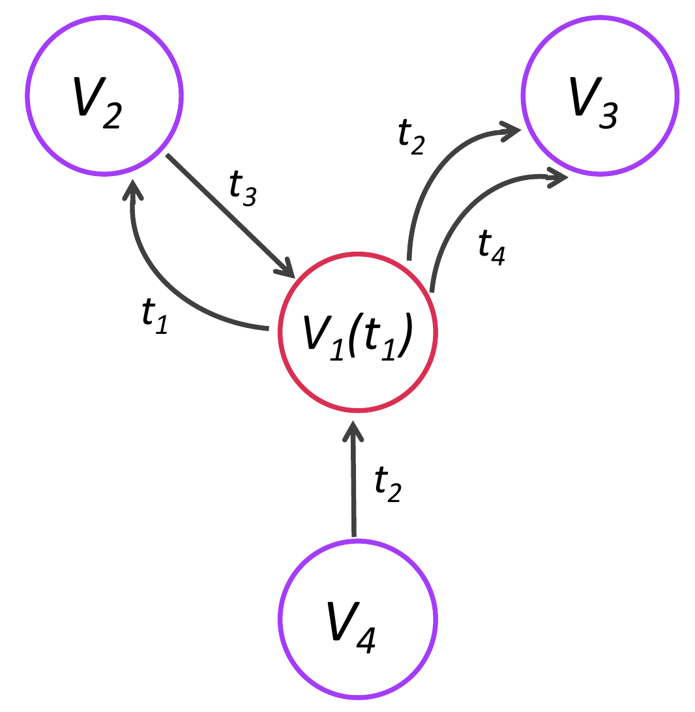

Analysis in Raphtory
Raphtory’s analysis engine works by vertex centric computation. Each vertex has access to local information about the graph (just its immediate vicinity). To complement this, vertices can communicate with their neighbours (other vertices that are directly connected to it). Many graph algorithms which operate on per-vertex level can be expressed in this way. The benefit of this is that graphs can be distributed over multiple cores/machines, each containing a proportion of the vertices, and these vertex computations can be executed in a parallel manner.
Each vertex knows:
It’s own update history, property set and property history e.g. values and update times;
The history/properties of the edges attached to it - both incoming and outgoing as Raphtory has a directed graph model - think twitter following, where the other person has to follow you back, instead of facebook friends.
Its own algorithmic state - this is a map of temporary values that can be set and modified during the computation steps.

The next sections will explore how algorithms can be written using these vertex communications.
The GraphAlgorithm API
Algorithms in Raphtory take a RaphtoryGraph as input, and return a Row for each vertex of that graph containing the result of the executed algorithm. To this end, there are three functions which are executed sequentially on the graph to get to these vertex results.
The core of the Raphtory algorithm API is the GraphAlgorithm class which custom algorithms should extend.
In general, an algorithm has three stages: graph processing, tabularising results, and writing out results.
Graph information is handled by the GraphPerspective class and tabular data by the Table class.
Rows in a Table store information for a single vertex and are manipulated using the Row class.
Thus, to import the core algorithm API use:
import com.raphtory.core.model.algorithm.{GraphAlgorithm, GraphPerspective, Row, Table}
There are two other classes that form part of the algorithm API, Chain and Identity.
A Chain applies a sequence of algorithms to the same graph and is discussed in more detail later.
Identitiy is an algorithm that leaves the graph unchanged and does not write out any results.
This is mainly useful as a default argument for algorithms that can optionally run another graph algorithm, e.g., as a pre- or post-processing step.
Graph processing
The core of most algorithms (though not all, see zero-step algorithms below) is the graph processing stage.
The graph processing is implemented by overriding the apply method, i.e.:
override def apply(graph: GraphPerspective): GraphPerspective = {
The apply method takes a GraphPerspective as input, manipulates the state of vertices, and then returns the GraphPerspective, either for further processing by other algorithms or for collecting and writing out results.
A GraphPerspective has two key methods which are used during graph processing, step() and iterate().
step()
step() takes in a function to be applied to each vertex in the graph, and permits each vertex to mutate its state and send messages to some or all of its neighbours. This is often used as the setup for an algorithm, getting each vertex ready with a default state or finding the subset of nodes which are required to send the first messages. For example:
graph
.step({
vertex =>
vertex.setState("cclabel", vertex.ID)
vertex.messageAllNeighbours(vertex.ID)
})
This is a snippet from the Raphtory connected components implementation. Here, each node sets its cclabel to its own ID and then sends this ID to all of its neighbours.
iterate()
iterate() does the same thing as step, but is run repeatedly until some criterion is met or a maximum number of iterations is reached. Vertex state is often used to record progress during iterations and to decide if an algorithm has converged. The convergence criterion is established by vertices voting to halt unanimously. All of this can be seen in the example below:
.iterate({
vertex =>
val label = vertex.messageQueue[Long].min
if (label < vertex.getState[Long]("cclabel")) {
vertex.setState("cclabel", label)
vertex messageAllNeighbours label
}
else
vertex.voteToHalt()
}, iterations = 100, executeMessagedOnly = true)
}
In this instance, the vertices check the messages they have received from neighbours and set their cclabel to be the minimum number received. This new label is then sent to their neighbours, allowing it to propagate and the neighbours who sent other labels to set it themselves in the next step. If no new label is found (as their own label is already lower) a vertex may call voteToHalt. This means that they believe they have found their final value and therefore the algorithm may converge early. No new messages are sent in this instance.
Due to the nature of this algorithm and those like it, iterate has an additional flag of executeMessagedOnly, which when set means that only vertices which have received new messages will execute the function.
This can drastically increase the effeciency of algorithms on large graphs, where often only a few vertices may need to execute at any one step (especially when looking at algorithms like random walks or paths).
For connected components, as a vertex won’t change its label unless a lower label is received from a neighbour, it can be set here.
Tabularising results
Once graph processing is complete, the algorithm proceeds to collect vertex state into tabular form.
This stage of the algorithm is implemented by overriding the tabularise method, i.e.
override def tabularise(graph: GraphPerspective): Table = {
select()
Typically, one calls select on the input graph as the first step of tabularise (though one could in principle do further graph post-processing at this stage).
select() maps a vertex to a Row object containing the results for that vertex. For example:
graph
.select(vertex => Row(vertex.ID(),vertex.getState[Long]("cclabel")))
In the connected components instance, we are interested in extracting the ID of the vertex and the final component ID that it saved in its state.
filter() and explode()
Once we have the data in Row form we may perform a different set of transformations:
filter()
The filter function can only be run after the vertex data has been converted to Table format by the select call.
For example:
.filter(r=> r.get(1) == true)
This can be important if you only want to return elements that have received a certain label. Such as if we are looking for nodes reachable from a given entity in the graph, we can store a flag in their state and then filter on this once in Row form.
explode()
explode() can be used to increase the number of rows, or prevent the output from producing any arrays. For example, if the select function returned a list within the row, we can use the explode to turn this list into individual items.
.explode( row => row.get(2).asInstanceOf[List[(Long, String)]].map(
expl => Row( row(0), expl._1, expl._2)
)
)
Writing out results
Finally, once you are happy with the format of your data you can output it to disk.
This is implemented by overriding the write method. The write method takes a Table as input and is responsible for writing out the results. Normally, this will simply call the writeTo method on the table, i.e.,
override def write(table: Table): Unit = {table.writeTo(path)}
where path is anywhere on your local machine and should be defined during the setup of the algorithm.
Inside this directory will appear a folder containing the ouput from each of the partitions within your running Raphtory instance.
Types of Algorithm
Zero-step algorithms
Zero-step algorithms refer to all algorithms which require no vertex messaging step, and can be expressed just using a select() operation. This means that the algorithm only requires knowledge of each vertex and the edges connected to it, and might be known as local measures in the network science literature. Some algorithms that fit into this category are:
Vertex degree
Vertex/edge property extraction
Some temporal motifs centred on a vertex, e.g. 3-node 2-edge temporal motifs.
In principle, one can implement such an algorithm by only overriding the tabularise and write methods, leaving the default apply method which simply returns the input graph unchanged.
To see an example of this, here is a snippet from the Degree algorithm.
override def tabularise(graph: GraphPerspective): Table = {
graph.select({
vertex =>
val inDegree = vertex.getInNeighbours().size
val outDegree = vertex.getOutNeighbours().size
val totalDegree = vertex.getAllNeighbours().size
Row(vertex.getPropertyOrElse("name", vertex.ID()), inDegree, outDegree, totalDegree)
})
In here, the vertex’s in/out/total degree is extracted in a straightforward way, with line 7 mapping these to a row for outputting.
However, this means that the algorithm cannot usefully participate in a more complicated processing pipeline as downstream algorithms do not have access to the computed results.
For something as simple as outputting node degrees, which other algorithms already trivially have access to, this may make sense.
Generally, however, it is better practise to implement such algorithms using a single step() during graph processing which does not send any messages and sets the computed values as state on the vertices. For the degree algorithm above, we would instead have:
override def apply(graph: GraphPerspective): GraphPerspective = {
graph.step({
vertex =>
vertex.setState("inDegree", vertex.getInNeighbours().size)
vertex.setState("outDegree", vertex.getOutNeighbours().size)
vertex.setState("totalDegree", vertex.getAllNeighbours().size)
})
}
override def tabularise(graph: GraphPerspective): Table = {
graph.select({
vertex => Row(vertex.getPropertyOrElse("name", vertex.ID()),
vertex.getState("inDegree"), vertex.getState("outDegree"), vertex.getState("totalDegree"))
})
}
Implemented in this way, the algorithm can participate usefully in algorithm chaining discussed below.
One-step algorithms
One-step algorithms are those which require precisely one messaging step, and can be expressed using two calls to step() to send out the messages and collate the results. This maps to measures which require knowledge of a vertex’s neighbours and the connections between them. Some examples of these include:
Local triangle count
Local clustering coefficient
Average neighbour degree
For an example of this, let’s look at a snippet of the TriangleCount algorithm.
override def apply(graph: GraphPerspective): GraphPerspective = {
graph.step({
vertex =>
vertex.setState("triangles",0)
val neighbours = vertex.getAllNeighbours().toSet
neighbours.foreach({
nb =>
vertex.messageNeighbour(nb, neighbours)
})
})
.step({
vertex =>
val neighbours = vertex.getAllNeighbours().toSet
val queue = vertex.messageQueue[Set[Long]]
var tri = 0
queue.foreach(
nbs =>
tri+=nbs.intersect(neighbours).size
)
vertex.setState("triangles",tri/2)
})
}
override def tabularise(graph: GraphPerspective): Table = {
graph.select({vertex =>
Row(vertex.getPropertyOrElse("name", vertex.ID()), vertex.getState[Int]("triangles"))
}))
The first step() function tells each vertex to send a list of its neighbours to all neighbours. Then the second step() function tells each vertex to compute the intersection of the received sets with its own set of neighbours. The sum of these intersections is twice the number of triangles for that vertex, so this number is halved.
Iterative algorithms
Finally, iterative algorithms cover those which require an unknown number of messaging steps, which are executed using a mixture of step() and iterate(). These algorithms correspond to measures that take into account the large scale structure of the graph, including:
Connected components
Single source shortest path
PageRank, eigenvector and hub/authority centrality
Community detection (using the label propagation algorithm)
Watts’ linear threshold model
Diffusion models (taint tracking, SIS/SIR)
An example of this is the ConnectedComponents algorithm discussed previously.
Tabularisers
It is possible to write algorithms that only extract vertex state and output it in table format.
These are particularly useful as the final step in an algorithm chain where one may want to also extract intermediate results.
In this case, there is no need to override the apply method as the default implementation simply returns the input graph unchanged. A tabulariser can simply override the tabularise and write methods as needed.
Composing algorithms
It is often useful to compose different algorithms. This is implemented in Raphtory using the Chain class.
As an example, consider the CBOD algorithm which detects outliers based on community labels for vertices.
In some cases, community labels may already be included in the input data.
However, most of the time one would need to run a community detection algorithm (e.g., LPA) first to get the labels.
One way to express this in Raphtory is to use a Chain, i.e,
import com.raphtory.core.model.algorithm.Chain
import com.raphtory.algorithms.{LPA, CBOD}
val lpa_cbod = Chain(LPA(), CBOD(label="lpalabel"))
The apply method of a Chain simply calls the apply method of the input algorithms in sequence, i.e., lpa_cbod.apply(graph) is equivalent to calling CBOD(label='lpalabel').apply(LPA().apply(graph)){:.language-scala .highlight}.
The tabularise and write methods of a chain call the corresponding methods of the last algorithm in the chain, i.e.,
lpa-cbod.tabularise(graph){:.language-scala .highlight} is equivalent to CBOD(label='lpalabel).tabularise(graph){:.language-scala .highlight} and similar for write.
In this example, LPA() first computes community labels and stores them in a vertex state with key "lpalabel"{:.language-scala .highlight}.
CBOD then uses the labels to identify outliers and writes out the results.
Instead of using Chain directly, one can also use the -> operator to achieve the same result, i.e.,
val lpa_cbod = LPA() -> CBOD(label="lpalabel")
which constructs the same Chain object under the hood.
In the case of CBOD, one can also supply the community detection algorithm as an optional argument, i.e., CBOD(label="lpalabel", labeler=LPA()){:.language-scala .highlight}, where by default labeler=Identity(){:.language-scala .highlight} which does nothing.
What now?
To summarise, Raphtory’s analytical engine provides a way of expressing a large variety of graph algorithms, implemented by vertex computations. Unlike more general graph analytics libraries, it has functionalities for expressing temporal queries in a simple way.
Next, you can take a look at implementing the Degree of Separation algorithm we run during the installation.
Six Degrees of Gandalf
In the previous entry, you learnt how to write your own spout and builder to ingest the data and how our analysis API works. Here, we’re going to go over how to write an new algorithm for a Lord of the Rings dataset that will get the size of the six degrees of separation network for a character; in this case,Gandalf. Six degrees of separation is “the idea that all people on average are six, or fewer, social connections away from each other.” (wiki here in case you want to know more).
The example data can be found in the path src/main/scala/examples in the example directory cloned in the installation guide.
The class we are creating extends GraphAlgorithm with the type of the data the algorithm is to return, in this case:
import com.raphtory.core.model.algorithm.{GraphAlgorithm, GraphPerspective, Row, Table}
class DegreesSeperation(name: String = "Gandalf", fileOutput:String="/tmp/DegreesSeperation")
extends GraphAlgorithm {
Note: For those not familar with scala, the name argument given to the class has a default value of Gandalf. This means if the user does not explicitly give a name when they create an instance of the algorithm, this value will be used. A similar premise is used for the output path.
First we need to override the apply method to implement the core algorithm:
override def apply(graph: GraphPerspective): GraphPerspective = {
Step
First, we need to create a property to store the state of separation and initialize it in step. Here we are finding the node which is the starting point, in this case we are looking for Gandalf. Once found we set his state to 0 and then message all of its neighbours. If a node is not Gandalf, their state is initialised to -1, which will be used later to work out nodes which are unreachable from Gandalf.
graph
.step({
vertex =>
if (vertex.getPropertyOrElse("name", "") == name)
{
vertex.messageAllNeighbours(0)
vertex.setState(SEPARATION, 0)
} else
{
vertex.setState(SEPARATION, -1)
}
})
The bulk
As mentioned before, the iterate module implements the bulk of the algorithm. In here, message queues for all nodes are checked, their separation status is updated if it has not been set previously. Nodes that are a single hop from Gandalf will have received a message of 0, this is thus incremented to 1 and this becomes their separation state. These nodes then message all their neighbours with their new state, 1, and the cycle repeats. Nodes only update their state if they have not been changed before.
This process only runs through vertices that have been sent a message (executeMessagedOnly = true) and runs up to 6 times iterations = 6.
.iterate(
{
vertex =>
val sep_state = vertex.messageQueue[Int].max + 1
val current_sep = vertex.getStateOrElse[Int](SEPARATION, -1)
if (current_sep == -1) {
vertex.setState(SEPARATION, sep_state)
vertex.messageAllNeighbours(sep_state)
}
}, iterations = 6, executeMessagedOnly = true)
}
The Return of The King
Now that the algorithm has converged, we need to get the results back and process them if necessary. The following goes through all nodes and extracts the final label value aquired.
override def tabularise(graph: GraphPerspective): Table = {
graph.select(vertex => Row(vertex.getPropertyOrElse("name", "unknown"), vertex.getStateOrElse[Int](SEPARATION, -1)))
}
We could add a filter .filter(row=> row.getInt(1) > -1) to ignore any nodes that have not had their state change. This would exclude nodes that are not at all connected to Gandalf.
We also should write out the results:
override def write(table: Table): Unit = {
table.writeTo(fileOutput)
}
Running Analysis
To run your implemented algorithm or any of the algorithms included in the most recent Raphtory Release (See here), you must submit them to the graph. You can either request a pointQuery to look at a single point in time or a rangeQuery over a subset of the history of the graph.
Some example point queries are found within the Runner App we created in the previous tutorial:
Point Query
Point queries take the algorithm you wish to run and a timestamp specifying the time of interest. You may additionally specify a List of windows with which Raphtory will generate a unique perspective for each. Within these perspectives of the graph, entities which have been updated before the chosen timestamp, but as recently as the window size specified are included. An example of these running a DegreesSeperation function on line 10000 can be seen below:
rg.pointQuery(DegreesSeperation(name = "Gandalf"),timestamp=32670)
rg.pointQuery(DegreesSeperation(name = "Gandalf"),timestamp=25000,windows=List(100,1000,10000)
Running this algorithm, returns the following data:
32670,Odo,2
32670,Samwise,1
32670,Elendil,2
32670,Valandil,2
32670,Angbor,2
32670,Arwen,2
32670,Treebeard,1
32670,Óin,3
32670,Butterbur,1
32670,Finduilas,2
32670,Celebrimbor,2
32670,Grimbeorn,2
32670,Lobelia,2
This data tells us that at a given time the time, person X and is N number of hops away. For example at time 32670, Samwise was at minimum 1 hop away from Gandalf, whereas Lobelia was 2 hops away.
Range Query
Range queries are similar to this, but take a start time, end time (inclusive) and increment with which it moves between these two points. An example of range queries over the full history (all pages) running ConnectedComponents can be seen below:
rg.rangeQuery(ConnectedComponents(), start = 1,end = 32674,increment = 100)
rg.rangeQuery(ConnectedComponents(), start = 1,end = 32674,increment = 100,windows=List(100))
Raphtory Client
The RaphtoryClient is very simple to implement and can be run compiled, as the Service code above, or via the Scala REPL. An example client may be seen below:
import com.raphtory.algorithms.ConnectedComponents
import com.raphtory.core.build.client.RaphtoryClient
object ExampleClient extends App {
val client = new RaphtoryClient("leaderIP/hostname:1600",1700)
client.pointQuery(ConnectedComponents("/tmp"),10000,List(10000, 1000,100))
}
Here we can see that the client has only two arguments. The first is the leader’s RAPHTORY_BIND_ADDRESS and RAPHTORY_BIND_PORT combined into one string, seperated by a colon. Secondly is a port on the local machine with which to bind to - in this instance 1700 is chosen.
The client then has the same pointQuery and rangeQuery functionality available to it as the RaphtoryGraph, and can be interacted with as such. Algorithms submitted this way will be sent across to the QueryManager and the results saved into each partition for retrieval.
Note: Unfortunately you cannot submit brand new algorithms in this manner, only those which are availble within the Jars submitted with the Components previously. This is because of the manner in which closures (anonymous functions) work in Scala 2.12 and currently has no work around. This should hopefully be fixed in later versions of Raphtory!
Whats next?
You have reached the end of the quick start tutorial! For any discussion of it, or help with your own projects using Raphtory, please join the slack.
What Next?
Now that we have gone through how to build a graph and how to perform analytics on it the final step is how to properly deploy it in a distributed environment!
If you have any questions, come join the Raphtory Slack and get involved with the discussion.